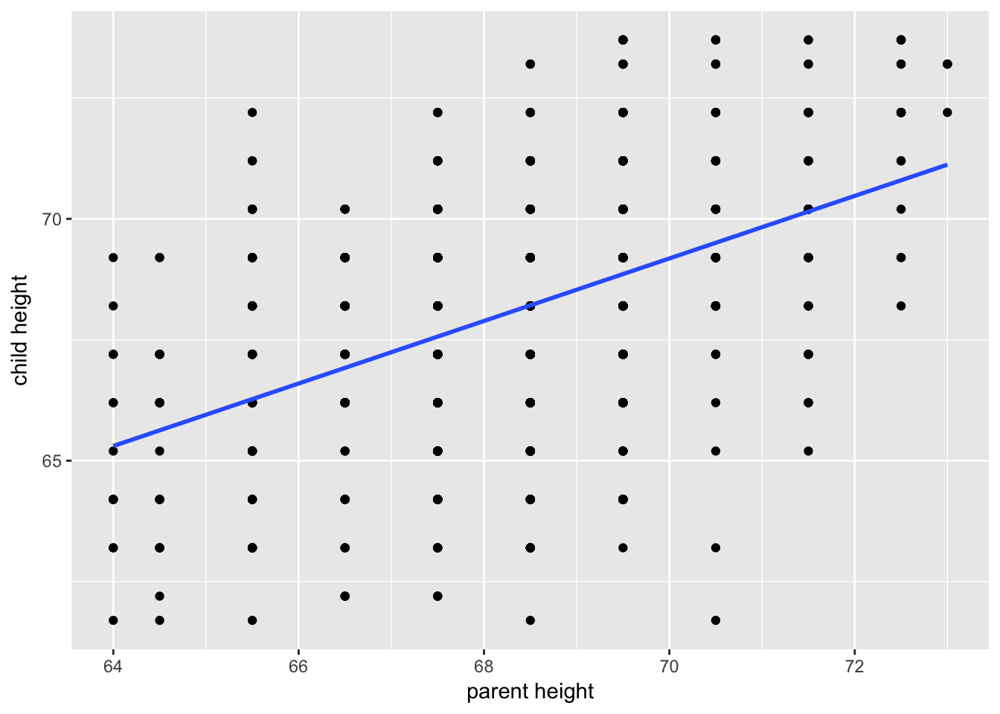
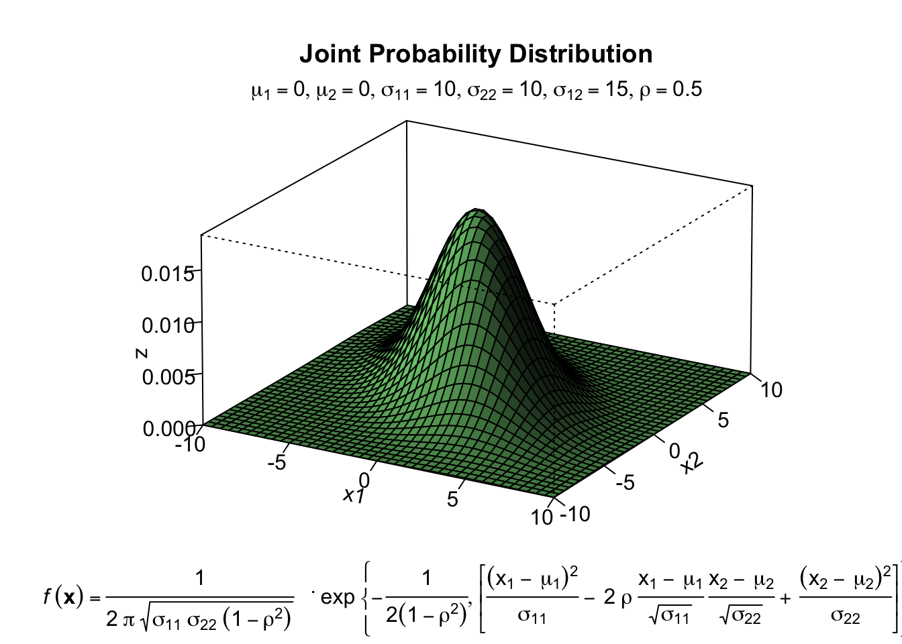
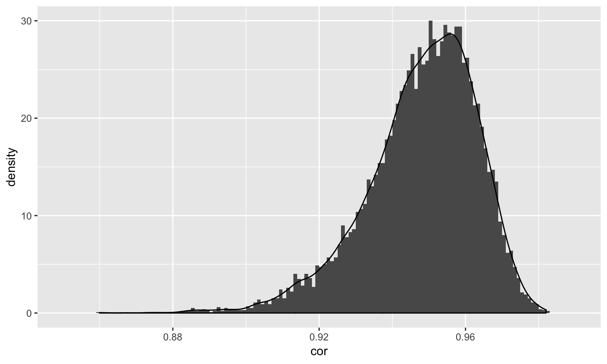

Correlations
Relationships
What is the relationship between IV and DV?
- Measuring relationships depend on type of measurement
E.g. chi-square for categorical
Modeling relationships
t.test(y ~ x, data)- This semester we will examine this relationship through GLM that takes the form for y = x + e
- What analysis you use will depend on how you measure your IV (X) and your DV (Y)
Modeling relationships
- You have primarily been working wtih categorical IVs (t-test, ANOVA, chi-square)
- How do we look at continous IVs and DVs?
Dispersion
Variation (sum of squares) \[ SS = {\sum{(x-\bar{x})^2}} \] \[ SS = {\sum{(x-\mu)^2}} \]
Dispersion
Variance \[ s^{2} = {\frac{\sum{(x-\bar{x})^2}}{N-1}} \] \[ \sigma^{2} = {\frac{\sum{(x-\mu)^2}}{N}} \]
Dispersion
Standard Deviation \[ s = \sqrt{\frac{\sum{(x-\bar{x})^2}}{N-1}} \] \[ \sigma = \sqrt{\frac{\sum{(x-\mu)^2}}{N}} \]
formula standard error of the mean?
Associations
Covariation (cross products) \[ SS = {\sum{{(x-\bar{x})(y-\bar{y})}}} \] \[ SS = {\sum{{(x-\mu_{x})(y-\mu_{y})}}} \]
Associations
Covariance \[ cov_{xy}^{2} = {\frac{\sum{(x-\bar{x})(y-\bar{y})}}{N-1}} \] \[ \sigma_{xy}^{2} = {\frac{\sum{(x-\mu_{x})(y-\mu_{y})}}{N}} \]
- Covariance matrix is basis for many analyses
- What are some issues that may arise when comparing covariances?
Associations
Correlations \[ r_{xy} = {\frac{\sum({z_{x}z_{y})}}{N}} \]
\[ \rho_{xy} = {\frac{cov(X,Y)}{\sigma_{x}\sigma_{y}}} \]
Many other formulas exist for specific types of data, these were more helpful when we computed everything by hand (more on this later)
Associations
Correlations
- How much two variables are linearly related
- -1 to 1
- Invariant to changes in mean or scaling
- Most common (and basic) effect size measure
Associations
Correlations 
Correlations
Hypothesis testing
\[ H_{0}: \rho_{xy} = 0 \] \[ H_{A}: \rho_{xy} \neq 0 \]
- Assumes:
- Observations are independent
- Symmetric bivariate distribution (joint probability distribution)

Correlations
Hypothesis testing
\[ H_{0}: \rho_{xy} = 0 \] \[ H_{A}: \rho_{xy} \neq 0 \]
Test statistic
\[ t = {\frac{r}{SE_{r}}} \] \[ t = {\frac{r}{\sqrt{\frac{1-r^{2}}{N-2}}}} \]
df = N-2
Effect size
- The strength of relationship between two variables
- Ω2, η2, cohen’s d, cohen’s f, hedges g, R2 , Risk-ratio, etc
- Significance is a function of effect size and sample size
- Statistical significance ≠ practical significance
Effect size
How big is practical?
- Cohen (.1, .3., .5)
- Meyer & Hemphill .3 is average
- Rosenthaul
Drug TX? Alive Dead Treatment 65 35 No Tx 35 65
- Variance explained (more later)
What is the size of the correlation?
- Chemotherapy and breast cancer survival?
- Batting ability and hit success on a single at bat?
- Antihistamine use and reduced sneezing/runny nose?
- Combat exposure and PTSD?
- Ibuprofen on pain reduction?
- Gender and weight?
- Therapy and well being?
- Observer ratings of attractiveness?
- Gender and arm strength?
- Nearness to equator and daily temperature for U.S.?
What is the size of the correlation?
- Chemotherapy and breast cancer survival? (.03)
- Batting ability and hit success on a single at bat? (.06)
- Antihistamine use and reduced sneezing/runny nose? (.11)
- Combat exposure and PTSD? (.11)
- Ibuprofen on pain reduction? (.14)
- Gender and weight? (.26)
- Therapy and well being? (.32)
- Observer ratings of attractiveness? (.39)
- Gender and arm strength? (.55)
- Nearness to equator and daily temperature for U.S.? (.60)
Questions to ask yourself:
What is your N?
What is the typical effect size in the field?
Study design?
What is your DV?
Importance (reaction time vs cancer)?
Same method as IV (method variance)?
Power calculations
library(pwr)
pwr.r.test(n = , r = .1, sig.level = .05 , power = .8)##
## approximate correlation power calculation (arctangh transformation)
##
## n = 781.7516
## r = 0.1
## sig.level = 0.05
## power = 0.8
## alternative = two.sidedpwr.r.test(n = , r = .3, sig.level = .05 , power = .8)##
## approximate correlation power calculation (arctangh transformation)
##
## n = 84.07364
## r = 0.3
## sig.level = 0.05
## power = 0.8
## alternative = two.sidedPower calculations
- But what is your confidence?
- N = 84 gives you CI[.09, 48]
- Schönbrodt & Perugini (2013) suggest correlations stabilize at 250+ regardless of effect
- CI[.19, .39]
Fisher’s r to z’ transformation
- If we want to make calculations based on \(\rho \neq 0\) then we will run into a skewed sampling distribution

Fisher’s r to z’ transformation
- Skewed sampling distribution will rear its head when:
- \(H_{0}: \rho \neq 0\)
- Calculating confidence intervals
- Testing two correlations against one another
- r to z’:
\[ z^{'} = {\frac{1}{2}}ln{\frac{1+r}{1-r}} \]
Fisher’s r to z’ transformation

Steps for computing confidence interval 1. Transform r into z’
2. Compute CI as you normally would using z’
3. revert back to r
\[ r = {\frac{e^{2z'}-1}{e^{2z'}+1}} \]
How to do in R
library(psych)
fisherz(r)
fisherz2r(z)Two independent groups test
-Does the correlation in group 1 differ from the correlation in group 2? \[ H_{A}: \rho_{1} = \rho_{2} \] \[ H_{A}: \rho_{1} \neq \rho_{2} \] -Normally distributed \[ Z = {\frac{z'_{1}-z'_{2}}{se_{z1-z2}}} \]
Two independent groups test
- different standard error compared to 1 sample test \[ Z = {\frac{z'_{1}-z'_{2}}{se_{z1-z2}}} \] \[ se_{z1-z2} = {\sqrt {se_{z1} + se_{z1}}} = {\sqrt {\frac{1}{n_{1}-3}+{\frac{1}{n_{2}-3}}}} \]
Other correlation tests:
- Set of correltions
- Dependent correlations (i.e., within same group)
These are more easily tested via Structural Equation Modeling (SEM) - Intra Class Correlation (ICC)
Factors that influence r (and most other test statistics)
- Restriction of range (GRE scores and success)
- Very skewed distributions (smoking and health)
- Non-linear associations
- Measurement overlap (modality and content)
- Reliability
Reliability
- All measurement includes error
- Score = true score + measurement error (CTT version)
- Reliability assesses the consistency of measurement
Reliability
- All measurement includes error
- Score = true score + measurement error (CTT version)
- Reliability assesses the consistency of measurement
Which would you rather have?
- 1 item final exam versus 30 item?
- assessment via trained clinician vs tarot cards?
- fMRI during minor earthquake vs no earthquake?
Reliability
- Cannot correlate error (randomness) with something
- Because we do not measure our variables perfectly we get lower correlations compared to true correlations
- If we want to have a valid measure it better be a reliable measure
Reliability
- think of reliability as a correlation with a measure and itself in a different world, at a different time, or a different but equal version
\[ r_{XX} \]
Reliability
- true score variance divided by observed variance
- how do you assess theoretical variance i.e., true score variance?
\[ r_{XY} = r_{X_{T} Y_{T}} {\sqrt {r_{XX} r_{YY}}} \] \[ r_{XY} = .6 {\sqrt {(.70) (.70)}} \]
Reliability
\[ r_{X_{T} Y_{T}} = = {\frac {r_{XY}} {\sqrt{{r_{XX} r_{YY}}}}} \]
\[ r_{X_{T} Y_{T}} = = {\frac {.30} {\sqrt{(.70)(.70)}}} \]
Most common ways to assess
- cronbachs alpha
library (psych)
alpha(measure)
## Gives average split half correlation
## Can tell you if you are assessing a single construct- test - retest reliability
- Kappa or ICC
Reliability
- if you are going to measure something do it well
- applies to ALL IVs and DVs, and all designs
- remember this when interpretting other’s research
Types of correlations
Types of correlations
- Point Biserial
- continuous and dichtomous
- Phi coefficient
- both dichotomous
- Spearman rank order
- ranked data (nonparametric)
- Biserial (assumes dichotomous is continous)
- Tetrachoric (assumes dichotomous is continous)
- both dichotomous
- Polychoric (assumes continous)
- ordinal